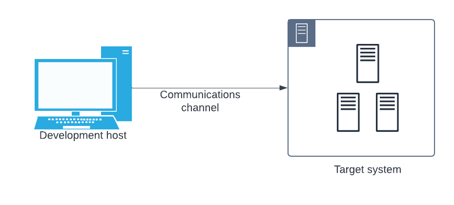
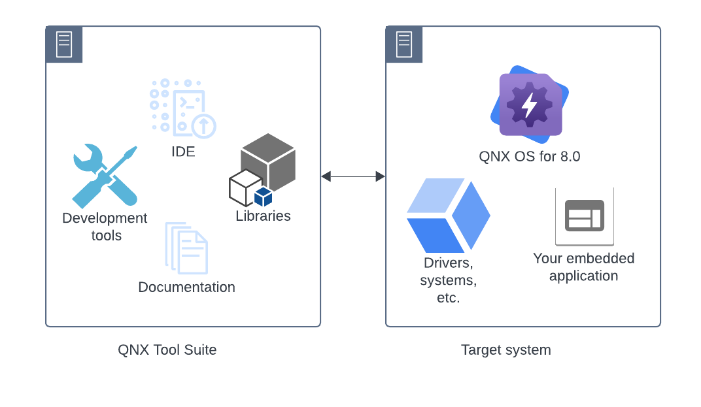

This section helps you to know about the prerequisites, and how to install QNX SDP on your development host.


You will need a supported x86-based development host such as a PC running a Windows or Linux OS. For a list of the supported versions of the various host OSs, go to the QNX SDP Release Notes.
You will need a virtual or embedded target system. You can use a virtual machine target such as VMware, Virtual Box, or QEMU (Quick EMUlator) that runs on your development host,
or you can use a supported embedded hardware target system.
For more information on how to use a BSP, see the
Working with QNX BSPs
chapter of the Building Embedded Systems guide.
If you are using a physical target system, you will need a means to communicate between your host and target system.
This could be, for example, through a hard wired USB/serial cable or a network connection.
For details on this see the documentation included with the BSP of your choice and the
Working with QNX BSPs
chapter of the Building Embedded Systems guide.
You will need a myQNX account with a valid QNX SDP 8 license deployed to it before you can access and use the
software. If your license is being provided to you through your company, then your
company's license administrator needs to deploy a license to your myQNX account. If
you are both the owner and the user of the license (such as when you have requested
an evaluation or non-commercial license through the web site or when your software
order has been fulfilled directly to your account), then you need to use the myQNX License Manager to accept the software license into your account
and then deploy the license to your own account as a user. To take a tour of myQNX
License manager, click Features: Take a Tour from within the
interface. For more details, go to Manage Your Product Licenses
in the
Using the QNX Software Center
chapter of myQNX License Manager and
QNX Software Center User's Guide.
Install and launch the QNX Software Centerin the
Using the QNX Software Centerchapter of myQNX License Manager and QNX Software Center User's Guide.
Install the QNX Software Development Platformin the
Using the QNX Software Centerchapter of myQNX License Manager and QNX Software Center User's Guide.
Installationin QNX Toolkit for Visual Studio Code.